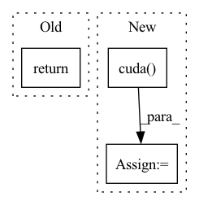

Pattern ID :2297
Before Change
mol_vecs = torch.stack(mol_vecs, dim=0) // num_molecules x hidden
return mol_vecs // num_molecules x hidden
class MPN(nn.Module):After Change
mol_vecs = torch.stack(mol_vecs, dim=0) // (num_molecules, hidden_size)
semiF_features = np.stack(semiF_features).todense()
semiF_features = torch.from_numpy(semiF_features).cuda()
print(semiF_features.size())
import pdb; pdb.set_trace()
return torch.cat(mol_vecs, semiF_features, dim=1) // (num_molecules, hidden_size)
In pattern: SUPERPATTERN
Frequency: 3
Non-data size: 3
Instances Fragment ID: 14300838
Project Name: aamini/chemprop
Commit Name: 6cf88ed5105a9529f637bb1e562c94c80e4947a3
Time: 2018-10-16
Author: yangk@mit.edu
File Name: mpn.py
M Class Name: MPNEncoder
N Class Name: MPNEncoder
M Method Name: forward(3)
N Method Name: forward(3)
M Parent Class: nn.Module
N Parent Class: nn.Module
M File Name: mpn.py
N File Name: mpn.py
M Start Line: 287
M End Line: 287
N Start Line: 114
N End Line: 292
Before Change
loss_conf = torch.mean(self.BCELoss(conf, tobj))
loss += loss_conf * self.balance[l] * self.obj_ratio
return loss
def get_near_points(self, x, y, i, j):
sub_x = x - iAfter Change
if self.cuda:
y_true = y_true.cuda()
noobj_mask = noobj_mask.cuda()
box_loss_scale = box_loss_scale.cuda()
//-----------------------------------------------------------//
// reshape_y_true[...,2:3]和reshape_y_true[...,3:4]
// 表示真实框的宽高，二者均在0-1之间
// 真实框越大，比重越小，小框的比重更大。 Fragment ID: 14300836
Project Name: bubbliiiing/yolov5-pytorch
Commit Name: d49e041b6f4ef50c5d94ce88d33d147f3227bc77
Time: 2022-01-15
Author: 47347516+bubbliiiing@users.noreply.github.com
File Name: nets/yolo_training.py
M Class Name: YOLOLoss
N Class Name: YOLOLoss
M Method Name: forward(4)
N Method Name: forward(4)
M Parent Class: nn.Module
N Parent Class: nn.Module
M File Name: nets/yolo_training.py
N File Name: nets/yolo_training.py
M Start Line: 158
M End Line: 198
N Start Line: 156
N End Line: 200
Before Change
pred_segmentation = self.segmentation(out_block2, out_block3, out_block4, out_block5)
pred_eventspotting = self.events_spotting(global_features, local_features)
return pred_ball_global, pred_ball_local, pred_segmentation, pred_eventspotting
def crop_original_batch(self, original_batch_input, pred_ball_global):
// Process input for local stage based on output of the global one
After Change
resize_batch_input)
input_ball_local = self.crop_original_batch(original_batch_input, resize_batch_input, pred_ball_global)
input_ball_local = input_ball_local.cuda()
pred_ball_local, local_features, _, _, _, _ = self.ball_local_stage(input_ball_local)
pred_eventspotting = self.events_spotting(global_features, local_features)
Fragment ID: 14300837
Project Name: maudzung/ttnet-real-time-analysis-system-for-table-tennis-pytorch
Commit Name: 8370e84b743075197d1f04fff115233959d82a29
Time: 2020-05-17
Author: nguyenmaudung93.kstn@gmail.com
File Name: src/models/TTNet.py
M Class Name: TTNet
N Class Name: TTNet
M Method Name: forward(3)
N Method Name: forward(3)
M Parent Class: nn.Module
N Parent Class: nn.Module
M File Name: src/models/TTNet.py
N File Name: src/models/TTNet.py
M Start Line: 165
M End Line: 168
N Start Line: 163
N End Line: 172